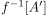
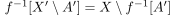
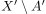
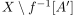
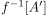
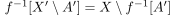
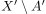
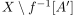

Urbilder abgeschlossene Mengen unter stetigen Abbildungen
1. Satz
Seien  und
und  topologische Räume und
topologische Räume und  eine Abbildung.
Dann sind folgende Aussagen äquivalent:
eine Abbildung.
Dann sind folgende Aussagen äquivalent:
 ist stetig
ist stetig- Das Urbild einer abgeschlossenen Menge ist ebenfalls abgeschlossen
2. Beweis
Sei  eine abgeschlossene (offene) Menge, so ist  abgeschlossen abgeschlossen (offen) und aus dem Komplement des Urbilds folgt, dass 
Dabei sind  bzw.  offene (abgeschlossene) Mengen (vgl. Definition einer abgeschlossenen Menge)
eine abgeschlossene (offene) Menge, so ist  abgeschlossen abgeschlossen (offen) und aus dem Komplement des Urbilds folgt, dass 
Dabei sind  bzw.  offene (abgeschlossene) Mengen (vgl. Definition einer abgeschlossenen Menge)